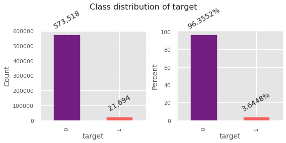

Author: Bhishan Poudel
Project: Insurance Claim Prediction for Brazilian company Porto Seguro
Kaggle project page: Porto Seguro’s Safe Driver Prediction
Task: Binary classification (will the client file the insurance next year or not?)
Metric of evaluation: Normalized Gini Index (same as gini index or gini coeff) (2*auc - 1)
Data
xxx_bin # binary features
xxx_cat # categorical features
continuous or ordinal features: ind reg car (individual, registration, and car)
calc features are excluded in this analysis. Ususally binary classification problems have AUC as the evaluation metric but this project has the evaluation metric normalized gini index. In the above figure the normalized gini index is given by ratio A/(A+B). We can also calculate gini from area under the curve. normalized gini = 2 * auc -1. AUC can vary 0.5 to 1 so gini varies from -1 to 1. -1 to 0 is useless, we can get 0 to 1 simply by reversing the labels 0 to 1 and vice versa. 0 is the absolute worst and 1 is the perfect score.
# if the output is binary gini = 2*auc -1
gini = 2 * sklearn.metrics.auc_roc_score(X,y) - 1
# calculation of gini
def ginic(actual, pred):
n = len(actual)
a_s = actual[np.argsort(pred)]
a_c = a_s.cumsum()
giniSum = a_c.sum() / a_c[-1] - (n + 1) / 2.0
return giniSum / n
def gini_normalizedc(a, p):
return ginic(a, p) / ginic(a, a)
I have tried various machine learning models for this project. Out of which stacking of three different lgb classifiers gave me the best outcome.
There are various methods of feature selection. One of the useful way is looking at the feature_importances_ method of the classifer. This gives the feature importance for that model. However, there are other methods to get the feature importances. Particularly I looked at Boruta Feature Importances. The first few selected features are shown below: